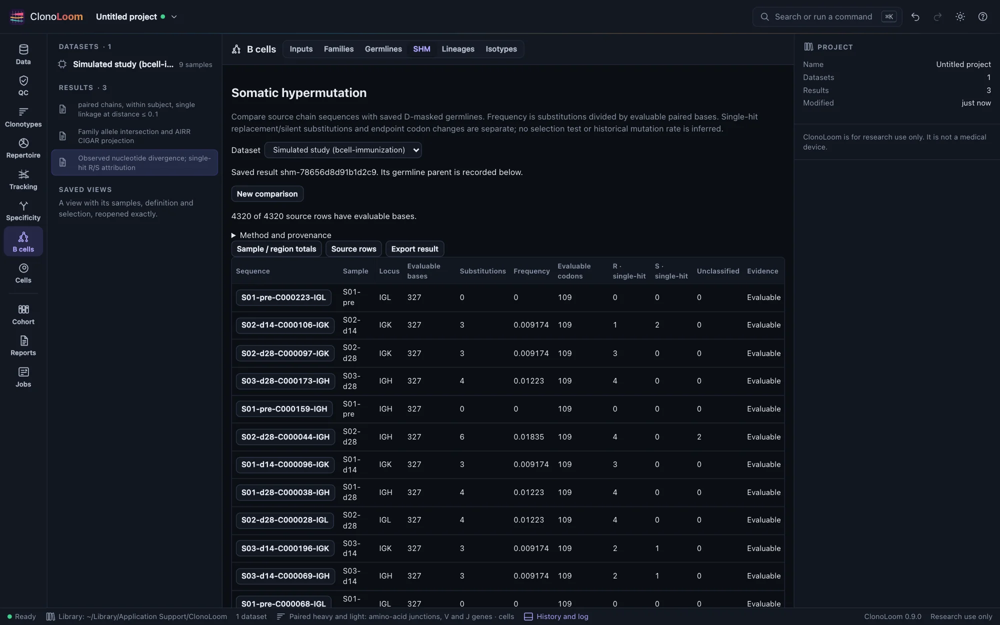
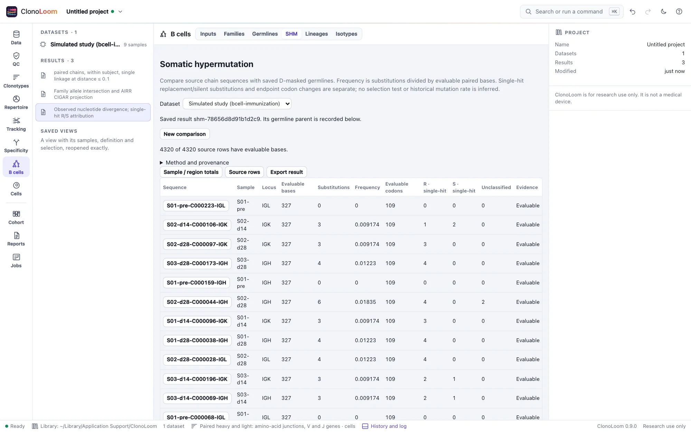

Somatic hypermutation
B cells → SHM compares source chain rows with their saved D-masked germlines and keeps every denominator and exclusion.
Measure a saved germline result


Save a Germlines result, then open B cells → SHM, choose that saved parent and select Measure SHM. The parent fixes membership and reference choice. Its checksum and reference provenance travel with the immutable result. The artificial immunization guide runs the complete workflow.
What enters the denominator
A substitution is an unequal pair of A/C/G/T bases in the query and reconstructed reference. Frequency is substitutions divided by evaluable paired bases. D/N/P masks, gaps and ambiguities are separate counts. With no evaluable bases the frequency is missing, including the default artificial study's entirely masked CDR3.
Whole-alignment, V/J segment and individual FWR/CDR results overlap; do not sum them. Regions use supplied AIRR coordinates on the oriented raw query. Missing boundaries remain missing; invalid or overlapping boundaries make the regional partition unavailable while whole-alignment and segment counts remain usable. Deletion gaps have no query-region assignment. This method does not impose fixed biological boundaries or IMGT numbering on these alignments.
Replacement and silent changes
Codons require an explicitly in-frame V/J annotation and valid CDR3 coordinates agreeing exactly with the supplied junction including its conserved flanking codons. That checked junction establishes query phase. Any alignment indel suppresses codon inference. A codon must be complete, unambiguous, non-stop and within one reference segment; a regional codon must also fit inside that region. Missing evidence stays explicit.
A single substitution in an evaluable codon is replacement if the encoded amino acid differs, silent if it agrees. If a codon has multiple substitutions, their order is unknown: those substitutions remain unclassified. The final codon pair still has a replacement/silent endpoint classification, reported separately as codons. Unclassified substitutions remain in the nucleotide frequency numerator. Stop-containing codons are separately counted and excluded from codon comparisons; their paired bases remain evaluable.
These net differences are not historical event counts or a mutation rate. Reversals can erase differences. No selection statistic, mutation-path inference or sequencing-error correction is performed.
Inspect and export
Sample/region totals pool source chain rows within each sample and locus. They are not weighted by reads, UMIs or cells, and duplicate contigs are retained. Available-row and evaluable-codon-row counts show coverage. These descriptive summaries do not treat chain rows as biological replicates.
Select Source rows and a sequence to inspect regional denominators, masks, gaps, ambiguities, R/S counts, multi-hit codons and source identity. The interface pages through the complete result. Export result includes every row/region in CSV, sample summaries, full JSON, the manifest and the source notice. Missing regional statistics are blank in CSV with an explicit reason. Saved results reopen without reloading references; new computations require the original dataset and checksum-verified parent.
Methods and validation
The comparison framework follows Gupta et al. (2015). Coordinates follow AIRR Rearrangement schema 2.0, and translation uses NCBI genetic code table 1. The conservative evaluability and single-hit attribution rules are ClonoLoom policies, not a reproduction of another package's mutation-counting rules.
Independent calculations compare all 4,320 artificial chain sequences directly with their known ancestors in every region. Analytic tests cover ambiguity, indels, clipping, orientation, stops, partial codons and malformed coordinates. Biological reference and annotation correctness remain prerequisites; artificial truth does not establish accuracy on real repertoires.